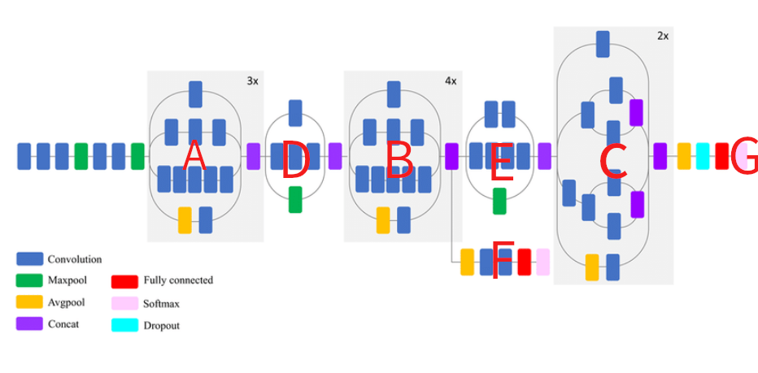
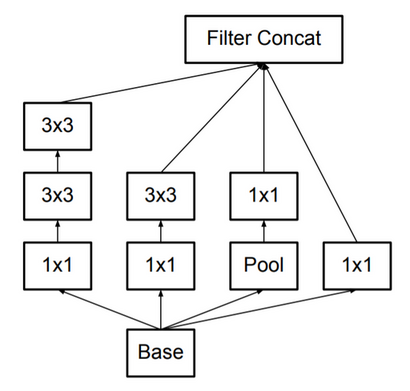
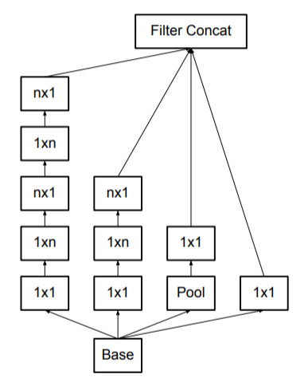
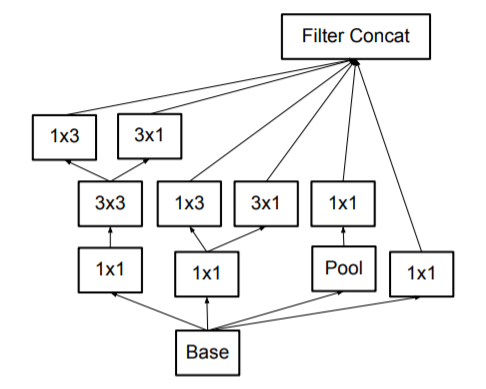
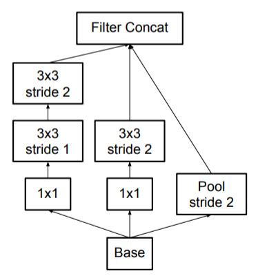

Inception
Table of Contents
1 Inception
inception 系列中最早的模型是 GoogleNet (2014/9), 提出了 inception 模块.
后来 Rethinking the Inception Architecture for Computer Vision (2015/12, google) 提出了 inception_v2 和inception_v3, 其中 v2 提出了 batchnorm, v3 提出了 factoried conv, asymmetric conv
1.1 Network

1.1.1 InceptionV3
图中的 A, B, C 是三种不同规格的 inception 模块. 注意所有的 inception 模块都是 stride 为 1 和 same padding, 它们没有 downsample 的功能
1.1.1.1 Factoried Conv
A 是 factoried conv, 是指用两个 3x3 的 conv 代替 5x5 的 conv, receptive field 不变, 但 flops 大约变为原来的 18/25 = 0.72 倍

1.1.1.2 Asymmetric Conv
B, C 都是 asymmetric conv, 即用 1xn, nx1 两个 conv 代替 nxn 的 conv, 其中 B 是 1xn 和 nx1 串行, 而 C 是两者并行.
串行:

并行:

Backlinks
ENet (ENet > Network > bottleneck): bottleneck 中间的 conv 变成 Asymmetric Conv, 例如 5x5 kernel 变 5x1 和 1x5 两 个kernel, 在保持 receptive field 大小不变的基础上降低了计算量. 参考了 inception
1.1.2 Efficient Grid Size Reduction
图中的 D, E 为了做 downsample, 但并不是直接使用 pooling, 因为:
- 先 conv 后 pooling 时计算量太大
- 先 pooling 后 conv 时丢失的信息太多, 导致特征信息丢失 (representational bottleneck)
inception_v3 提出一个 `Efficient Grid Size Reduction` 的方法: conv 和 pooling 同时做, 即一路做 pooling, 另一路做 stride 2 的 conv2d, 然后两者 concat.

Backlinks
ENet (ENet > Network > initial): 输入数据为 (3, 512, 512), 通过 initial 层后变为 (16, 256, 256), 这里没有直接做 pooling 而是参考了 inception 的 Efficient Grid Size Reduction
1.1.3 Auxiliary Classifier
inception 模型会输出两个 softmax, 分别为 F, G, 其中 F 称为 auxiliary classifier. F, G 训练时使用相同的标签, F 人为的增加了训练的难度, 相当于一种 regularization 的手段.
Backlinks
ICNet (ICNet > Network > train): 训练时没有执行最后的 4x upsample, 因为并没有使用原始 label 计算 loss. 所以上面计 算的 3 个 loss 都相当于 Auxiliary Classifier
PSPNet (PSPNet > Network > auxiliary loss): 在论文中也使用了和 Auxiliary Classifier 类似的方法: resnet 中间某一层通过 conv/fc/resize/upsampling/… 后与 label 计算 loss, 再乘以一个权重算到最终的 loss 里
1.1.4 Label Smoothing
\(new\_label=0.9*one\_hot\_labels+0.9/n\_classes\)
类似于知识蒸馏中的 soft label, 可以看做一种 regularization 手段.
Backlinks
ENet (ENet): ENet 做为一个 semantic segmentation 模型, 基本就是一个标准的 encoder-decoder 结 构, 并且参考了 ResNet 和 Inception 的设计
Image Classification (Image Classification > Inception): Inception
Tensorflow Architecture (Tensorflow Architecture > CPU Parallelism > 测试): 1. inter_op_parallelism_threads 作用不大, 可能是因为 mnist 模型没有分支结构, 换 成 Inception 应该会明显起作用.